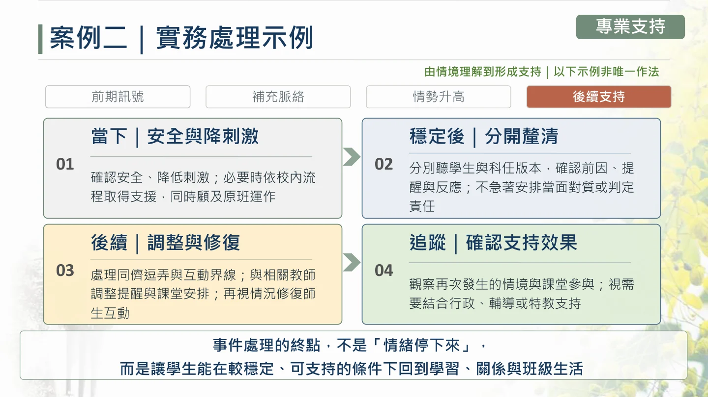

2026.10.01 · 32 頁
02 / SELECTED WORK
情境案例課程
讓判斷成為可以練習的事
把教育現場的角色、資訊差異與行動選擇，設計成可討論、可練習的課程。
DESIGN FOR THE LEARNER
同一個問題，依角色調整學習任務
依學校、課程定位與學習者階段，調整案例難度、討論問題與活動安排。設計從需求確認、學習目標延伸到授課節奏與回饋修訂。
我負責的工作
課程主題與綱要、學習目標、案例情境、提問引導、教案、授課簡報、活動安排，以及實際授課與內容修正。
累積授課 70 餘場，合作 20 餘所師資培育大學，課程肯定度 95% 以上。依 2026.07 履歷彙整。
A CASE TO THINK THROUGH
先看到資訊，再形成判斷
以下依 2026.10.01 融合教育課程改編，讓你體驗案例的推進方式。這是課程展示，不進行評分或送出作答資料。
01 / 情境國小導師 × 融合教育
FROM DISCUSSION TO ACTION
把討論推進到可行的支持


FULL MATERIALS
八份課程版本與講座企劃
2026.05.04 · 20 頁
融合教育：中等教育情境案例
完整 20 頁2026.04.25 · 30 頁
特教案例：多方觀點與支持任務
完整 30 頁03.31 · 25 頁
特教案例：角色理解與協作
完整 25 頁11.29 · 34 頁
特教案例：家庭、教師與學生觀點
完整 34 頁11.22 · 27 頁
幼教案例：活動設計與共同支持
完整 27 頁11.15 · 32 頁
國小案例：學習與親師互動
完整 32 頁12.06 · 37 頁 · 含原始影片
國小兩案例：課堂參與與行動選擇
完整 37 頁課程目的與安排 · 1 頁
實務案例講座企劃
完整 1 頁較早版本依原檔日期標示，沒有明確年份的資料保留月日。完整材料可比較不同學段、角色與活動設計。